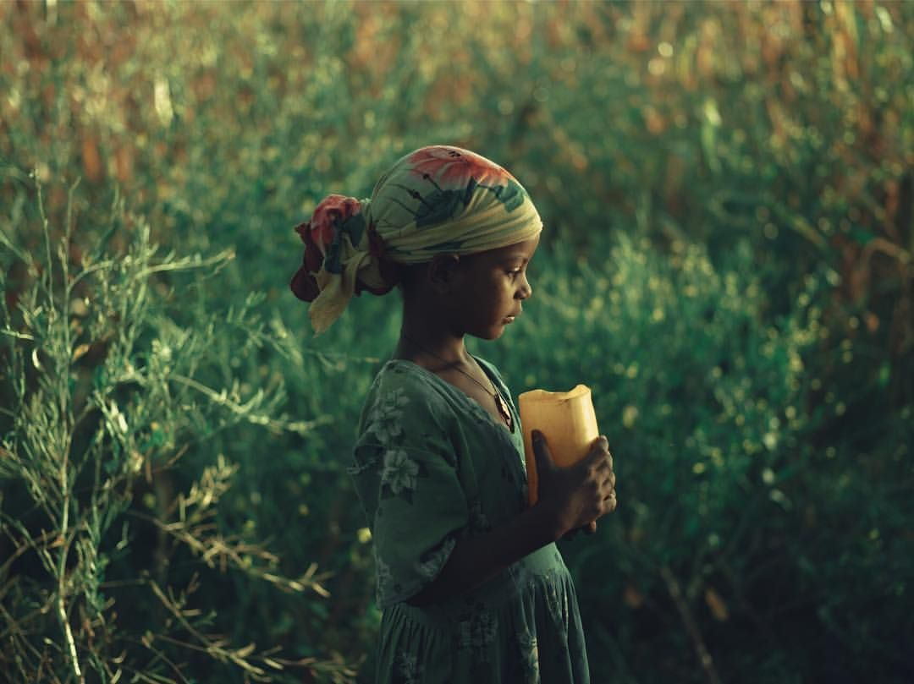

Walking alongside
Young people
Click any cause card to explore the impact, vision, and activities behind each focus area.

Youth Mentorship & Leadership
Connecting ambitious young people with experienced mentors who guide them through career choices, build confidence, and cultivate purposeful leadership skills.

Mental Health & Emotional Wellbeing
Creating safe, stigma-free spaces where youth can speak openly, access peer support, and build the emotional resilience that underpins every dimension of their growth.

Community Impact & Volunteering
Youth-led clean-up drives, tree planting campaigns, and neighbourhood outreach initiatives that transform local environments while nurturing civic responsibility.

SDG Engagement & Environment
Educating, mobilising, and equipping youth with climate literacy and environmental awareness — turning them into committed stewards and champions of the UN SDGs.

Social Inclusion & Equal Access
Ensuring no young person is excluded because of poverty, gender, disability, or geography — creating accessible pathways to education, skills, and opportunity for all.

Education & Skills Development
From digital literacy to entrepreneurship training, we close the skills gap — giving youth the practical knowledge and financial awareness to build independent, sustainable futures.
If you would like to support any of these causes, collaborate with us, mentor young people, or contribute in meaningful ways, please contact us directly — we would love to hear from you.